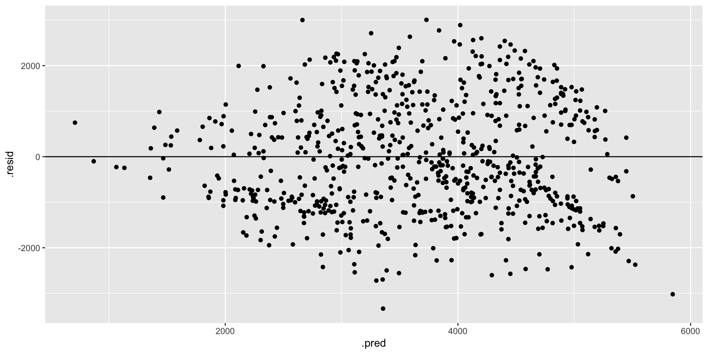

Model Evaluation
Video Recap

We are in the regression setting. We want to build a model of some quantitative output variable \(y\) by some predictors \(x\):
\[y = f(x) + \epsilon\]
There are many regression tools that we might use to build this model. We’ll use a linear regression model which assumes that \(y\) is a linear combination of the \(x\)’s:
\[y = \beta_0 + \beta_1 x_1 + \beta_2 x_2 + \cdots \beta_p x_p + \epsilon\]
After building any model, it’s important to evaluate it: Is our regression model a “good” model?
- Is the model wrong?
- Is the model strong?
- Does the model produce accurate predictions?
- Is the model fair?
We will review these concepts through today’s exercises. A detailed overview is provided in the “Motivating Question” section under “Regression: Model Evaluation (Unit 1)” on the course website.
Questions
Capital Bikeshare provides a bike-sharing service in the Washington DC area. Customers can pick up and drop off bikes at any station around the city. Of primary interest to the company is:
How many registered riders can we expect today?
To this end, you will build, evaluate, and compare 2 different linear regression models of ridership using the following Capital Bikeshare dataset (originally from the UCI Machine Learning Repository):
# Load packages we'll need to wrangle and plot the data
library(tidyverse)
# Load the data
bikes <- read.csv("https://mac-stat.github.io/data/bike_share.csv")
# Only keep / select some variables
# And round some variables (just for our demo purposes)
bikes <- bikes %>%
rename(rides = riders_registered, temp = temp_feel) %>%
mutate(windspeed = round(windspeed), temp = round(temp)) %>%
select(rides, windspeed, temp, weekend)This dataset contains the following information for a sample of different dates:
| variable | description |
|---|---|
| rides | count of daily rides by registered users |
| windspeed | wind speed in miles per hour |
| temp | what the temperature feels like in degrees Fahrenheit |
| weekend | whether or not it falls on a weekend |
We’ll consider two linear regression models of ridership:
rides ~ windspeed + temp and rides ~ windspeed + temp + weekend
- Plot the relationships. First, let’s plot these relationships. REMINDER: Don’t write in any chunk with starter code. Copy, paste, and modify the code in the chunk below it.
Solution


- tidymodels STEP 1: model specification. We’ll build and evaluate our two models of ridership using the tidymodels package. This code is more complicated than the
lm()function we used in STAT 155. BUT:
- tidymodels is part of the broader tidyverse (what we use to plot and wrangle data), thus the syntax is more consistent
- tidymodels generalizes to the other ML algorithms we’ll survey in this course, thus will eventually minimize the unique syntax we need to learn
The first step is to specify what type of model we want to build. We’ll store this as lm_spec, our linear regression model (lm) specification (spec).
This code specifies but doesn’t build any model – we didn’t even give it any data or specify the variables of interest!
Solution
# Load package
library(tidymodels)
lm_spec <- linear_reg() %>% # we want a linear regression model
set_mode("regression") %>% # this is a regression task (y is quantitative)
set_engine("lm")# we'll estimate the model using the lm function
lm_specLinear Regression Model Specification (regression)
Computational engine: lm - tidymodels STEP 2: model estimation. We can now estimate or
fitour two ridership models using the specified model structure (lm_spec) and our samplebikesdata:
Solution
bike_model_1 <- lm_spec %>%
fit(rides ~ windspeed + temp, data = bikes)
bike_model_2 <- lm_spec %>%
fit(rides ~ windspeed + temp + weekend, data = bikes)
# Check out the results:
bike_model_1 %>%
tidy()# A tibble: 3 × 5
term estimate std.error statistic p.value
<chr> <dbl> <dbl> <dbl> <dbl>
1 (Intercept) -20.8 300. -0.0694 9.45e- 1
2 windspeed -36.1 9.42 -3.83 1.37e- 4
3 temp 55.4 3.33 16.6 7.58e-53# A tibble: 4 × 5
term estimate std.error statistic p.value
<chr> <dbl> <dbl> <dbl> <dbl>
1 (Intercept) 298. 289. 1.03 3.02e- 1
2 windspeed -35.6 9.00 -3.95 8.46e- 5
3 temp 54.3 3.18 17.1 3.82e-55
4 weekendTRUE -858. 101. -8.46 1.47e-16- Is it fair? Now, let’s evaluate our two models. First, do you have any concerns about the context in which the data were collected and analyzed? About the potential impact of this analysis?
Solution
What do you think?
- Who might be harmed?
- Who benefits?
- Is it strong? We can measure and compare the strength of these models using \(R^2\), the proportion of variability in our response variable that’s explained by the model. Report which model is stronger and interpret its \(R^2\).
Solution
Model 2 is stronger than model 1 (\(R^2\) of 0.372 vs 0.310). But it only explains 37% of the variability in ridership from day to day.
# A tibble: 1 × 12
r.squared adj.r.squared sigma statistic p.value df logLik AIC BIC
<dbl> <dbl> <dbl> <dbl> <dbl> <dbl> <dbl> <dbl> <dbl>
1 0.310 0.308 1298. 163. 2.44e-59 2 -6276. 12560. 12578.
# ℹ 3 more variables: deviance <dbl>, df.residual <int>, nobs <int># A tibble: 1 × 12
r.squared adj.r.squared sigma statistic p.value df logLik AIC BIC
<dbl> <dbl> <dbl> <dbl> <dbl> <dbl> <dbl> <dbl> <dbl>
1 0.372 0.369 1239. 143. 5.82e-73 3 -6242. 12493. 12516.
# ℹ 3 more variables: deviance <dbl>, df.residual <int>, nobs <int>- Pause: get the residuals and predictions. Our next model evaluation questions will focus on the models’ predictions and prediction errors, or residuals. We can obtain this information by augmenting our models with our original
bikesdata. For example:
We can also predict outcomes for new observations using either augment() or predict(). Note the difference in the output:
Solution
augment() gives the predictions and residuals for all rows in the data. predict() only gives you predictions.
# Obtain the predictions & residuals using bike_model_1
bike_model_1 %>%
augment(new_data = bikes) %>%
head()# A tibble: 6 × 6
.pred .resid rides windspeed temp weekend
<dbl> <dbl> <int> <dbl> <dbl> <lgl>
1 3183. -2529. 654 11 65 TRUE
2 2911. -2241. 670 17 64 TRUE
3 2080. -851. 1229 17 49 FALSE
4 2407. -953. 1454 11 51 FALSE
5 2446. -928. 1518 13 53 FALSE
6 2699. -1181. 1518 6 53 FALSE # Predict ridership on a 60 degree day with 20 mph winds
bike_model_1 %>%
augment(new_data = data.frame(windspeed = 20, temp = 60))# A tibble: 1 × 3
.pred windspeed temp
<dbl> <dbl> <dbl>
1 2581. 20 60# Predict ridership on a 60 degree day with 20 mph winds
bike_model_1 %>%
predict(new_data = data.frame(windspeed = 20, temp = 60))# A tibble: 1 × 1
.pred
<dbl>
1 2581.- Does it produce accurate predictions? Recall that the mean absolute error (MAE) measures the typical prediction error. Specifically, it is the mean of the absolute values of the residual errors for the days in our dataset.
- Use the residuals to calculate the MAE for the 2 models. HINT:
abs().
- Doing the calculation from scratch helps solidify your understanding of how MAE is calculated, thus interpreted. Check your calculations using a shortcut function.
- Which model has more accurate predictions? Interpret the MAE for this model and comment on whether it’s “large” or “small”. NOTE: “large” or “small” is defined by the context (e.g. relative to the observed range of ridership, the consequences of a bad prediction, etc).
Solution
On average, the model 1 predictions are off by ~1080 riders and the model 2 predictions are off by ~1038 riders. Is this a lot? Consider this error relative to the scale of the data: there are roughly 1000 - 7000 riders per day.
# A tibble: 1 × 1
mae
<dbl>
1 1080.# A tibble: 1 × 1
mae
<dbl>
1 1038.# A tibble: 1 × 3
.metric .estimator .estimate
<chr> <chr> <dbl>
1 mae standard 1080.# A tibble: 1 × 3
.metric .estimator .estimate
<chr> <chr> <dbl>
1 mae standard 1038.- Is it wrong? To determine whether the linear regression assumptions behind
bike_model_1andbike_model_2are reasonable, we can review residual plots, i.e. plots of the residuals vs predictions for each observation in our dataset. Run the code below and summarize your assessment of whether our models are wrong. RECALL: We want the appoints to appear random and centered around 0 across the entire range of the model / predictions.
Solution
Both models look roughly “right” BUT there is a little downward slope at the extreme end of the residual plots. This corresponds to the observed phenomenon that when it’s really hot, ridership starts dipping. In a future model, we might incorporate a quadratic temperature term.
# Residual plot for bike_model_1
bike_model_1 %>%
augment(new_data = bikes) %>%
ggplot(aes(x = .pred, y = .resid)) +
geom_point() +
geom_hline(yintercept = 0)
# Residual plot for bike_model_2
bike_model_2 %>%
augment(new_data = bikes) %>%
ggplot(aes(x = .pred, y = .resid)) +
geom_point() +
geom_hline(yintercept = 0)
- Art vs science Inspecting residual plots is more art than science.1 It requires a lot of practice. Consider another example using simulated data. First, build a model that assumes all predictors are roughly linearly related:
Next, check out a pairs plot. Is there anything here that makes you think that our model assumption is bad?

Finally, check out a residual plot. Any concerns now?
Solution
Art + Science!
- Details: communication & code style Communication is a key machine learning skill, including written summaries, presentations, and code. Just like an essay, code must have structure, signposts, and grammar that will make it easier for others to follow. The below code runs, but it is “bad code”.
- Fix this code and add comments so that it is easier for yourself and others to follow.
- Also pay attention to what this code does.
Solution
# Calculate the median ridership by weekend
# Put each new thought or action on its own line!
# This makes it easier to follow the steps.
bikes %>%
group_by(weekend) %>%
summarize(median(rides))# A tibble: 2 × 2
weekend `median(rides)`
<lgl> <dbl>
1 FALSE 3848
2 TRUE 2955# Obtain days on which there are at most 700 rides,
# it's the weekend, and temps are above 60 degrees
# Use a shorter name that's easier to read and type.
# Add spaces to make things easier to read.
# Add line breaks to make it easier to follow the steps.
warm_weekends <- bikes %>%
filter(rides <= 700, weekend == FALSE, temp > 60)
warm_weekends rides windspeed temp weekend
1 577 18 67 FALSE
2 655 18 68 FALSE
3 20 24 72 FALSE# Store temp in Celsius
bikes_celsius <- bikes %>%
mutate(temp = (temp - 32)*5/9)
head(bikes_celsius) rides windspeed temp weekend
1 654 11 18.333333 TRUE
2 670 17 17.777778 TRUE
3 1229 17 9.444444 FALSE
4 1454 11 10.555556 FALSE
5 1518 13 11.666667 FALSE
6 1518 6 11.666667 FALSE- STAT 155 Review: model interpretation & application Let’s interpret and apply
bike_model_2.
- How can we interpret the
tempcoefficient?
- We expect roughly 54 more riders on warm days.
- We expect roughly 54 more riders per every 1 degree increase in temperature.
- When controlling for windspeed and weekend status, we expect roughly 54 more riders on warm days.
- When controlling for windspeed and weekend status, we expect roughly 54 more riders per every 1 degree increase in temperature.
- How can we interpret the
weekendTRUEcoefficient?
- We expect roughly 858 fewer riders on weekends.
- We expect roughly 858 fewer riders per every extra weekend.
- When controlling for windspeed and temperature, we expect roughly 858 fewer riders on weekends.
- When controlling for windspeed and temperature, we expect roughly 858 fewer riders per every extra weekend.
- Reproduce the predicted ridership and corresponding residual for day 1 from scratch (how were these calculated?!):
Solution
# A tibble: 4 × 5
term estimate std.error statistic p.value
<chr> <dbl> <dbl> <dbl> <dbl>
1 (Intercept) 298. 289. 1.03 3.02e- 1
2 windspeed -35.6 9.00 -3.95 8.46e- 5
3 temp 54.3 3.18 17.1 3.82e-55
4 weekendTRUE -858. 101. -8.46 1.47e-16- When controlling for windspeed and weekend status, we expect roughly 54 more riders per every 1 degree increase in temperature.
- When controlling for windspeed and temperature, we expect roughly 858 fewer riders on weekends (compared to weekdays).
# A tibble: 1 × 6
.pred .resid rides windspeed temp weekend
<dbl> <dbl> <int> <dbl> <dbl> <lgl>
1 2581. -1927. 654 11 65 TRUE [1] 2580.87[1] -1926.87- STAT 155 Review: data wrangling Through the “Details: communication & code style” and elsewhere, you’ve reviewed the use of various
dplyrdata wrangling verbs:filter(),mutate(),summarize(),group_by(), andselect(). Use these to complete the following tasks.
- Calculate the mean temperature across all days in the data set.
- Calculate the mean temperature on weekends vs weekdays.
- Print out the 3 days with the highest temperatures. HINT:
arrange()orarrange(desc()) - Name and store a new data set which: - only includes the days that fall on a weekend and have temps below 80 degrees - has a new variable,
temp_above_freezing, which calculates how far the temperature is above (or below) freezing (32 degrees F) - only includes thewindspeed,temp, andtemp_above_freezingvariables.
Solution
mean(temp)
1 74.69083# A tibble: 2 × 2
weekend `mean(temp)`
<lgl> <dbl>
1 FALSE 75.1
2 TRUE 73.7 rides windspeed temp weekend
1 2825 9 108 FALSE
2 3152 15 106 FALSE
3 2298 9 104 TRUE# d
new_data <- bikes %>%
filter(weekend == TRUE, temp < 80) %>%
mutate(temp_above_freezing = temp - 32) %>%
select(windspeed, temp, temp_above_freezing)
head(new_data) windspeed temp temp_above_freezing
1 11 65 33
2 17 64 32
3 18 47 15
4 24 42 10
5 11 54 22
6 13 53 21- STAT 155 Review: plots
Construct plots of the following relationships:
- rides vs temp
- rides vs weekend
- rides vs temp and weekend
Solution


- Done!
- Knit/render your notes.
- Check the solutions on the course website.
- Get a head start on the wrap-up steps below.
Wrap-Up
- Finishing the activity:
- If you didn’t finish the activity, no problem! Be sure to complete the activity outside of class, review the solutions in the online manual, and ask any questions on Slack or in office hours.
- Re-organize and review your notes to help deepen your understanding, solidify your learning, and make homework go more smoothly!
- An R code video, posted under the pre-course materials for today’s class (see the “Schedule” page on this website), talks through the new
tidymodelscode. This video is OPTIONAL. Decide what’s right for you. - Set up Slack if you haven’t already. I’ll be posting announcements there from now on.
- Upcoming due dates:
- HW0 (STAT 155 Review): due Friday at 11:59 pm
- CP2: due 10 minutes before our next class